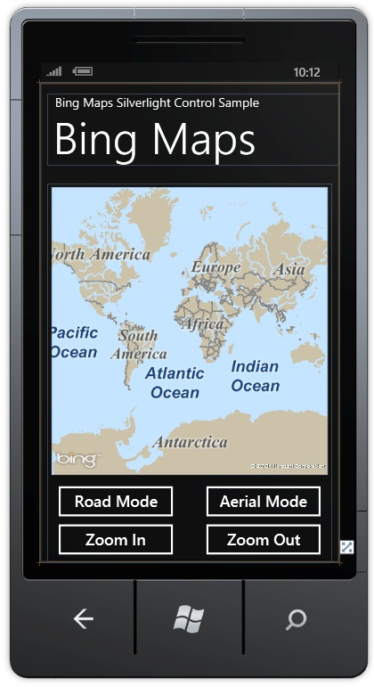
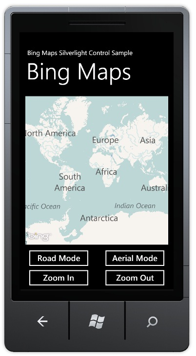

How to: Use the Bing Maps Silverlight Control for Windows Phone
September 25, 2012
This topic demonstrates how you can use the Bing Maps Silverlight Control for Windows Phone. To find this completed map control sample, see Code Samples for Windows Phone.
 Note: Note: |
|---|
|
|
| Note: |
|---|
|
If you are developing your application to target 256-MB devices, consider using a BingMapsTask instead of a Map control. This helps minimize the memory impact of your application, which is of particular importance when running on a 256-MB device. For more information, see Developing for 256-MB Devices and How to: Use the Bing Maps Task for Windows Phone. |
This topic shows how you can use the Bing Maps Silverlight control in a Windows Phone project. The finished sample includes the map control and provides two buttons for changing the map mode between Road Mode and Aerial Mode and two buttons for zooming in and out on the map.
To create a new project
-
Make sure you have downloaded and installed the Windows Phone SDK from the Dev Center.
-
Launch Visual Studio 2010 Express for Windows Phone from the Windows Start menu.
-
Create a new project by clicking the File | New Project menu command.
-
The New Project window will be displayed. Expand the Visual C# templates, and then select the Silverlight for Windows Phone templates.
-
Select the Windows Phone Application template. Fill in the project Name as desired.
-
Click OK. A new project will be created and MainPage.xaml will be opened in the Visual Studio designer window.
The next step is to lay out the controls of the application using the Visual Studio designer. After adding the controls, the final layout will look similar to the following screenshot:
To add the controls of the application
-
In the Toolbox in Visual Studio, select the Map control. Create a new Map control on the designer. The default name of the control will be map1.
-
In the Toolbox in Visual Studio, select the Button control. Create four new Button controls on the designer below the Map control. Set the text in the four buttons to be Road Mode, Aerial Mode, Zoom In, and Zoom Out. Name the four buttons buttonRoad, buttonAerial, buttonZoomIn, and buttonZoomOut.
XAMLEdit|Removexaml<Grid x:Name="ContentPanel" Grid.Row="1" Margin="12,0,12,0"> <my:Map Height="462" HorizontalAlignment="Left" Margin="6,6,0,0" Name="map1" VerticalAlignment="Top" Width="444" /> <Button Content="Road Mode" Height="72" HorizontalAlignment="Left" Margin="6,474,0,0" Name="buttonRoad" VerticalAlignment="Top" Width="207" /> <Button Content="Aerial Mode" Height="72" HorizontalAlignment="Left" Margin="243,474,0,0" Name="buttonAerial" VerticalAlignment="Top" Width="207" /> <Button Content="Zoom In" Height="72" HorizontalAlignment="Left" Margin="6,535,0,0" Name="buttonZoomIn" VerticalAlignment="Top" Width="207" /> <Button Content="Zoom Out" Height="72" HorizontalAlignment="Left" Margin="243,535,0,0" Name="buttonZoomOut" VerticalAlignment="Top" Width="207" /> </Grid><Grid x:Name="ContentPanel" Grid.Row="1" Margin="12,0,12,0"> <my:Map Height="462" HorizontalAlignment="Left" Margin="6,6,0,0" Name="map1" VerticalAlignment="Top" Width="444" /> <Button Content="Road Mode" Height="72" HorizontalAlignment="Left" Margin="6,474,0,0" Name="buttonRoad" VerticalAlignment="Top" Width="207" /> <Button Content="Aerial Mode" Height="72" HorizontalAlignment="Left" Margin="243,474,0,0" Name="buttonAerial" VerticalAlignment="Top" Width="207" /> <Button Content="Zoom In" Height="72" HorizontalAlignment="Left" Margin="6,535,0,0" Name="buttonZoomIn" VerticalAlignment="Top" Width="207" /> <Button Content="Zoom Out" Height="72" HorizontalAlignment="Left" Margin="243,535,0,0" Name="buttonZoomOut" VerticalAlignment="Top" Width="207" /> </Grid>
-
If you want the exact same layout shown in the image, copy and paste the XAML above and use it to replace the grid layout in your MainPage.xaml file.
-
You can also rename the application window titles as you desire.
This step will add the code to implement the four buttons.
To add code
-
Add a using statement for using Microsoft.Phone.Controls.Maps; in the MainPage.xaml.cs file.
-
Double-click the Road Mode button control. This will create a buttonRoad_Click event handler in the MainPage.xaml.cs file. Implement the method by setting the mode:
XAMLEdit|Removexamlprivate void buttonRoad_Click(object sender, RoutedEventArgs e) { map1.Mode = new RoadMode(); }private void buttonRoad_Click(object sender, RoutedEventArgs e) { map1.Mode = new RoadMode(); }
-
Double-click the Aerial Mode button control. This will create a buttonAerial_Click event handler in the MainPage.xaml.cs file. Implement the method by setting the mode:
XAMLEdit|Removexamlprivate void buttonAerial_Click(object sender, RoutedEventArgs e) { map1.Mode = new AerialMode(); }private void buttonAerial_Click(object sender, RoutedEventArgs e) { map1.Mode = new AerialMode(); }
-
Double-click the Zoom In button control. This will create a buttonZoomIn_Click event handler in the MainPage.xaml.cs file. Implement the method by setting the zoom value:
XAMLEdit|Removexamlprivate void buttonZoomIn_Click(object sender, RoutedEventArgs e) { double zoom; zoom = map1.ZoomLevel; map1.ZoomLevel = ++zoom; }private void buttonZoomIn_Click(object sender, RoutedEventArgs e) { double zoom; zoom = map1.ZoomLevel; map1.ZoomLevel = ++zoom; }
-
Double-click the Zoom Out button control. This will create a buttonZoomOut_Click event handler in the MainPage.xaml.cs file. Implement the method by setting the zoom value:
XAMLEdit|Removexamlprivate void buttonZoomOut_Click(object sender, RoutedEventArgs e) { double zoom; zoom = map1.ZoomLevel; map1.ZoomLevel = --zoom; }private void buttonZoomOut_Click(object sender, RoutedEventArgs e) { double zoom; zoom = map1.ZoomLevel; map1.ZoomLevel = --zoom; }
-
The XAML for the buttons will be updated to include the event handlers:
XAMLEdit|Removexaml<Grid x:Name="ContentPanel" Grid.Row="1" Margin="12,0,12,0"> <my:Map Height="462" HorizontalAlignment="Left" Margin="6,6,0,0" Name="map1" VerticalAlignment="Top" Width="444" /> <Button Content="Zoom In" Height="72" HorizontalAlignment="Left" Margin="6,535,0,0" Name="buttonZoomIn" VerticalAlignment="Top" Width="207" Click="buttonZoomIn_Click" /> <Button Content="Road Mode" Height="72" HorizontalAlignment="Left" Margin="6,474,0,0" Name="buttonRoad" VerticalAlignment="Top" Width="207" Click="buttonRoad_Click" /> <Button Content="Zoom Out" Height="72" HorizontalAlignment="Left" Margin="243,535,0,0" Name="buttonZoomOut" VerticalAlignment="Top" Width="207" Click="buttonZoomOut_Click" /> <Button Content="Aerial Mode" Height="72" HorizontalAlignment="Left" Margin="243,474,0,0" Name="buttonAerial" VerticalAlignment="Top" Width="207" Click="buttonAerial_Click" /> </Grid><Grid x:Name="ContentPanel" Grid.Row="1" Margin="12,0,12,0"> <my:Map Height="462" HorizontalAlignment="Left" Margin="6,6,0,0" Name="map1" VerticalAlignment="Top" Width="444" /> <Button Content="Zoom In" Height="72" HorizontalAlignment="Left" Margin="6,535,0,0" Name="buttonZoomIn" VerticalAlignment="Top" Width="207" Click="buttonZoomIn_Click" /> <Button Content="Road Mode" Height="72" HorizontalAlignment="Left" Margin="6,474,0,0" Name="buttonRoad" VerticalAlignment="Top" Width="207" Click="buttonRoad_Click" /> <Button Content="Zoom Out" Height="72" HorizontalAlignment="Left" Margin="243,535,0,0" Name="buttonZoomOut" VerticalAlignment="Top" Width="207" Click="buttonZoomOut_Click" /> <Button Content="Aerial Mode" Height="72" HorizontalAlignment="Left" Margin="243,474,0,0" Name="buttonAerial" VerticalAlignment="Top" Width="207" Click="buttonAerial_Click" /> </Grid>
The application is now complete. This step will let you build, run, and debug the application.
| Note: |
|---|
|
When running this sample, the background of the map control will show an Invalid credentials message. You can read Getting a Bing Maps Key and Accessing the Control Using a Bing Maps Key for instructions about how to obtain and use a key. |
To build and debug the application
-
Build the solution by selecting the Debug | Build Solution menu command. The project should build without any errors in the Error List window. You can open the Error List window, if it is not already open, by selecting the View | Other Windows | Error List menu command. If there are errors, review the steps above, correct any errors, and then build the solution again.
-
Run the application by selecting the Debug | Start Debugging menu command. This will open the emulator window and launch the application. Make sure that your desktop computer has Internet access. You can then test your application by clicking the buttons and verifying that map control responds.
-
You can set debug breakpoints in the code by placing the cursor on the desired line of code and selecting the Debug | Toggle Breakpoint menu command.
-
To stop debugging, you can select the Debug | Stop Debugging menu command.